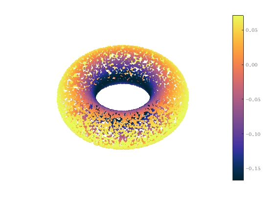

WME_draw_points
Visualize point clouds using scatter(scatter3) function
Contents
Syntax
- WME_draw_points(X)
- WME_draw_points(X, name, value)
Description
- WME_draw_points(X) displays points at locations specified by the row vectors of X. Inline functions scatter(scatter3) are used according to the row dimension of X. Default color is given by the last coordinates.
- WME_draw_points(X, name, value) displays points while showing properties specified by name-value. Available properties are:
- - 'curv' : value should be an RGB value or a vector of the same length as X. color points according to value
- - 'enhanced' : value should be an RGB value or a vector of the same length as X use histeq to enhance the contrast of color
- - 'view': value should be in the form [az, el]. Adjust the view of figure
- - 'colormap': value should be a string specifying the colormap in matlab_colormaps-master file
- - 'colorbar': value should be a string specifying the ticklable. for example: '%.2f'
- - 'save': value should be a string representing the title and type of the image you want to save. Matlab version should be 2020 or higher.
Example
[X, nom, gauss, mean] = WME_torus(1e4, 5, 2); WME_draw_points(X,'curv',gauss,'colorbar','%.2f');
Contact
Author: Yueqi Cao Email: bityueqi@gmail.com Web: https://yueqihome.site